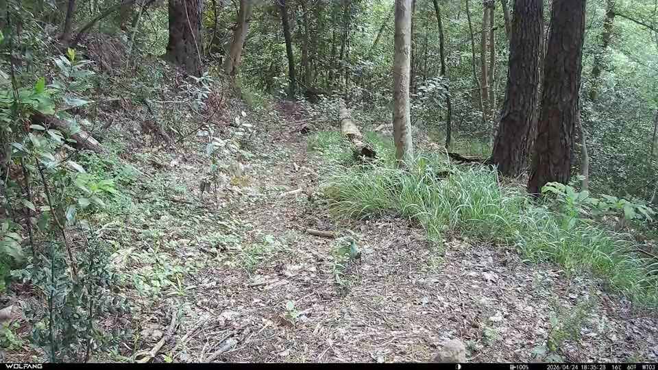
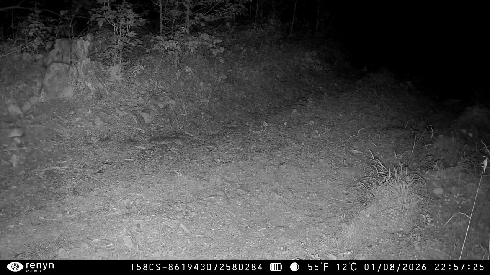
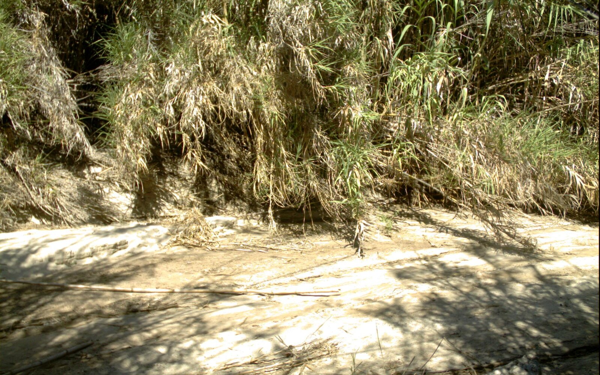
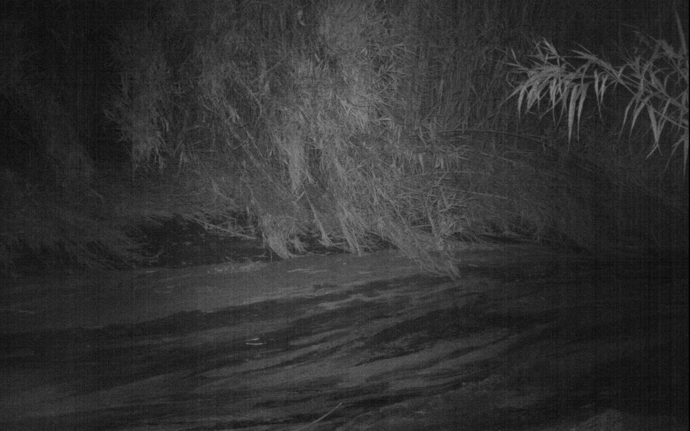
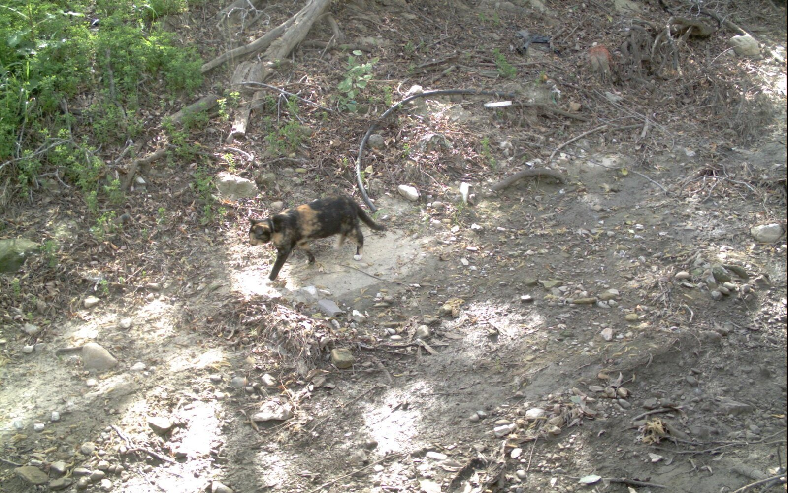
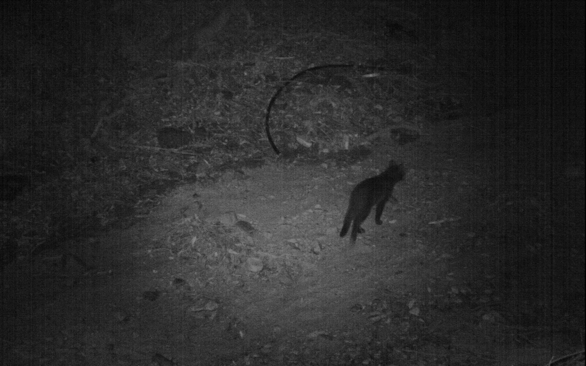

Chi va là? · Gli animali invisibili del Borgo delle CamelieLa fototrappola
1Com'è fatta
Una macchina fotografica che aspetta da sola nel bosco
La fototrappola è una piccola fotocamera chiusa in una scatola impermeabile. Si lega a un tronco e resta lì per settimane, senza nessuno. Non riprende in continuazione: dorme, e si sveglia solo quando davanti le passa qualcosa di caldo che si muove. Allora scatta una foto o gira un breve video, di giorno a colori e di notte in bianco e nero.
FIG. 1Vista di fronte. Misura più o meno 15 × 10 cm, come un libro piccolo.FIG. 2Aperta. Lo sportello si apre come un libro; dentro ci sono comandi, memoria e pile.
Luci a infrarossi. Alcune decine di piccoli LED. Di notte illuminano la scena con una luce che noi non vediamo, e quasi tutti gli animali nemmeno.
Obiettivo. Dietro c'è un sensore d'immagine, come quello di un telefono.
Sensore di movimento (PIR). La finestrella bianca a quadretti: è una lente che «vede» il calore. È lei che fa scattare tutto.
Sensore di luce. Un occhio minuscolo che decide se è giorno o notte.
Spia. Lampeggia mentre si sistema la fototrappola; poi resta spenta per non farsi notare.
Cinghia. Si stringe intorno al tronco: niente chiodi né viti nell'albero.
Ganci e occhiello. Chiudono lo sportello contro pioggia e polvere; nell'occhiello si mette un lucchetto.
Schermo e tasti. Servono a scegliere foto o video, la durata, la pausa, la data e l'ora.
Interruttore.Setup per le regolazioni, On per lasciarla al lavoro.
Scheda di memoria. Qui finiscono foto e video. Per vederli si estrae la scheda.
Pile. Otto stilo AA. Durano mesi, ma si consumano soprattutto di notte, per accendere i LED.
Guarnizione. Un bordo di gomma tiene fuori l'acqua: la fototrappola resta fuori anche sotto la pioggia e la neve.
0,2–0,6 sdal passaggio dell'animale al primo scatto
15–20 mfin dove «sente» un animale che passa
10–20 mfin dove illumina, di notte
8 pile AAda alcune settimane a qualche mese di lavoro
−20/+60 °Cfunziona con il gelo e con il caldo
Valori tipici: cambiano da modello a modello.
Le Camelie d'autunno · Sant'Andrea di Compito1 / 4
Chi va là? · Gli animali invisibili del Borgo delle CamelieCome si accorge che passa qualcuno
2Come si accorge che passa qualcuno
Non vede le forme: sente il calore che si sposta
Il sensore di movimento si chiama PIR, infrarosso passivo. Non manda fuori niente: raccoglie il calore che ogni corpo emana. Mammiferi e uccelli, come noi, sono più caldi del terreno e delle foglie. La lente a quadretti divide il bosco davanti in tante fasce: quando un corpo caldo passa da una fascia all'altra il sensore nota un cambiamento improvviso e sveglia la fotocamera.
FIG. 3La scena vista dall'alto. Negli spazi bianchi tra una fascia e l'altra il sensore non sente niente: è proprio il passaggio da «niente» a «caldo» che lo fa scattare. Le fasce arrivano a 15–20 metri.FIG. 4Che cosa succede in pochi secondi. Durante la pausa la fototrappola non riprende, anche se passa qualcuno: serve a non riempire la memoria con lo stesso animale.
Perché a volte non vede…
Lucertole, bisce e rospi non sono più caldi del terreno: per il sensore sono invisibili.
Nelle ore calde d'estate il suolo scaldato dal sole ha quasi la temperatura di un animale. La fototrappola «sente» meglio di notte e quando fa freddo.
Un animale che corre può uscire dall'inquadratura prima del primo scatto: nel video si vede solo una coda.
…e perché a volte scatta a vuoto
Un ramo o un ciuffo d'erba scaldati dal sole che si muovono col vento sembrano un corpo caldo.
Una macchia di sole che si sposta tra le foglie cambia la temperatura di un pezzo di terreno.
Per questo chi studia gli animali guarda centinaia di foto vuote per ogni animale: si chiamano falsi scatti.
FIG. 5Dove si mette. Legata a un tronco, un po' inclinata verso il basso, di traverso rispetto al sentiero: così l'animale attraversa più fasce e il sensore se ne accorge prima.
Le Camelie d'autunno · Sant'Andrea di Compito2 / 4
Chi va là? · Gli animali invisibili del Borgo delle CamelieDi giorno e di notte
3Di giorno e di notte
Di giorno a colori, di notte in bianco e nero
Due fototrappole di questa caccia al tesoro, in un momento senza animali. A sinistra la scena è illuminata dal sole. A destra è buio pesto: la luce viene dai LED della fototrappola, invisibile ai nostri occhi.
Giorno · ore 18:35

Notte · ore 22:57

FIG. 6Dentro la fototrappola. Giorno: un filtro toglie l'infrarosso, che altrimenti falserebbe i colori. Notte: il sensore di luce sposta il filtro e accende i LED. La luce dei LED ha un solo «colore», per giunta invisibile: il sensore può misurare solo quanta ne torna indietro, cioè chiaro e scuro.FIG. 7I colori della luce, in nanometri (nm). Il sensore della fototrappola vede fino a circa 1000 nm: anche l'infrarosso dei LED.
In breve
Di giorno
Di notte
Luce
il sole
i LED a infrarossi della fototrappola
Colori
sì
no: bianco, nero e grigi
Movimento
nitido anche chi corre
chi si muove esce un po' mosso
Distanza
si vede fino in fondo
oltre 10–20 m è tutto nero
Occhi
normali
spesso brillano, bianchissimi
Foglie
verdi
chiare, quasi bianche
Le Camelie d'autunno · Sant'Andrea di Compito3 / 4
Chi va là? · Gli animali invisibili del Borgo delle CamelieLeggere un'immagine
4Leggere un'immagine
Stesso posto, giorno e notte
Giorno · ore 15:02

Il letto asciutto di un torrente. La cosa più chiara è il fango secco; le canne sono verdi e scure.
Notte · ore 3:27

Di notte si capovolge: le foglie diventano chiare (cerchio), perché le piante rimandano indietro molto infrarosso. Il bordo resta buio (tratteggio): i LED illuminano bene solo il centro.
Giorno · ore 13:47

Un gatto tricolore: si distinguono il nero, l'arancio e il bianco del pelo.
Notte · ore 23:18

Un altro gatto nello stesso punto (c'è lo stesso tubo nero piegato ad arco). Del pelo si capisce solo se è chiaro o scuro, e i contorni sono un po' mossi.
La striscia in fondo a ogni immagine
Su ogni foto e ogni video la fototrappola stampa quando è stata ripresa la scena. La luna non dice se è giorno o notte: è la fase lunare, che interessa a chi studia gli animali, perché con la luna piena alcuni si muovono con più prudenza. Ogni marca scrive la striscia a modo suo.
Alle tappe, prova a chiederti
Il video è a colori o in bianco e nero? Allora era giorno o notte?
Che ore segna la striscia in basso? Che temperatura faceva?
Gli occhi dell'animale brillano? Di notte molti animali rimandano indietro la luce dei LED, come i gatti con i fari di un'auto.
Fotografie. Pagina 3: fotogrammi dei video della caccia «Chi va là?», scelti senza animali per non svelare le tappe. Pagina 4: Caltech Camera Traps (S. Beery, G. Van Horn, P. Perona, 2018), fototrappole nel sud della California, distribuite da LILA BC con licenza CDLA-Permissive 1.0; foto ritagliate e, quelle notturne, schiarite per la stampa. Disegni e schemi: originali.
Le Camelie d'autunno · Sant'Andrea di Compito4 / 4